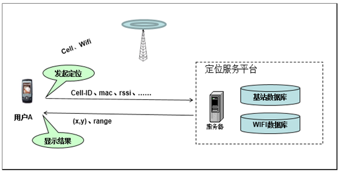
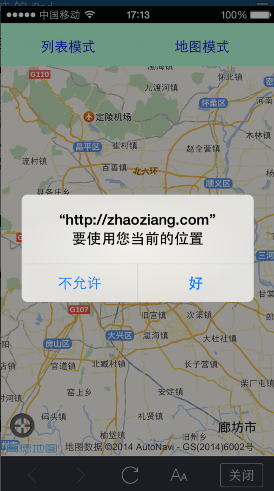

关于定位，分为GPS定位和网络定位2种
GPS定位，精度较高，可达到10米，但室内不可用，且超级费电
分为wifi定位和基站定位
都是通过获取wifi或者基站信息，然后查询对应的wifi或者基站位置数据库，得到的定位地点
定位数据库可以不断完善不断补充，所以，越定位越准确
浏览器定位插件，封装了标准HTML5定位，并且包含纠偏模块
由于核心是HTML5定位，所以浏览器定位插件仅适用于支持HTML5的浏览器上
Internet Explorer 9、Firefox、Chrome、Safari 以及 Opera 等浏览器定位插件也是混合定位，获取了wifi、基站信息用以定位
对于拥有 GPS 的设备，比如 iPhone，由于获得GPS信息，使得地理定位更加精确
浏览器定位，最好使用在手机浏览器上，会更加准确，也更加符合使用场景。PC浏览器上，建议使用IP定位
通过网络获取IP信息，然后查询IP数据库，获取相应的地址信息
非常适用于城市切换的场景，比如团购、酒店、天气等IP数据库也是可以完善补充，越来越丰富的，所以也是越使用越准确的
如果IP有跳转，有篡改等，那么IP定位就会不准确了
使用默认定位
在地图初始化时，不填入中心点center和地图级别level，那么高德会自动帮你定位当浏览器定位和IP定位都失败时，可以通过关键字查询，来定位城市甚至街道
通过一些简短的关键词，检索一个地点，使用AMap.PlaceSearch地点搜索服务插件
检索到地点后，默认显示第一个点的位置即可
参数对象PlaceSearchOptions允许设置搜索城市、搜索数据类别、搜索结果详略、搜索结果排序规则等AMap.Geocoder地理编码服务插件，是指将地址信息和地理坐标点信息进行相互转化
包括将地址信息转换为地理坐标点的编码，将地理坐标点转换为地址信息的逆地理编码使用地址解析。地址解析，是通过将结构化地址信息，解析成经纬度，然后设置地图中心点
定位